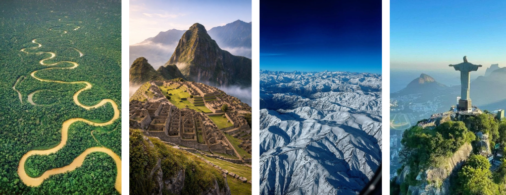

A América do Sul é um continente localizado principalmente no hemisfério sul e faz parte do continente americano. É formada por 12 países, entre eles Brasil, Argentina, Chile, Peru e Colômbia. O continente possui grande diversidade natural, cultural e econômica.
A fauna da América do Sul é uma das mais ricas do planeta. Muitos animais vivem nas florestas tropicais, savanas e montanhas do continente.
Alguns animais típicos são:
A Floresta Amazônica é considerada uma das regiões com maior biodiversidade do mundo.
A América do Sul possui diversos tipos de clima devido ao seu grande tamanho e variedade de relevo.
A vegetação da América do Sul é muito diversificada.
A América do Sul possui cerca de 430 milhões de habitantes. O país mais populoso é o Brasil.
A população do continente é formada por uma mistura de povos indígenas, europeus, africanos e asiáticos, criando uma grande diversidade cultural.
As principais línguas faladas são:
O relevo da América do Sul é formado principalmente por planícies, planaltos e cadeias de montanhas.